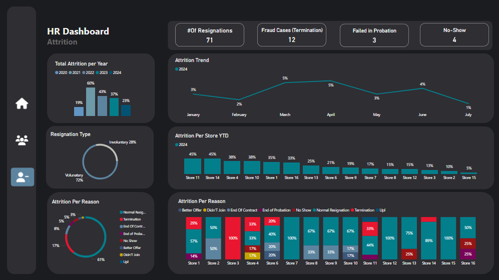

Project Introduction: A Data Analyst's Journey
In this series, we'll follow the journey of a data analyst hired at a company
that previously did not have a data analyst. Together, we’ll uncover insights and work through the
following three key steps:
- Create a summary dashboard (Overview).
- Develop one or two detailed dashboards.
- Showcase important insights and track key costs and KPIs in relevant
departments.
This approach closely mirrors my actual experience.
For this project, I will be using simulated data.
Note:
All companies' data are confidential by default, and as such, I
cannot use any real company data. However, if you are aware of any freely available online datasets,
feel free to share!
HR Dashboard (Project 1)
In this project, I developed an HR Dashboard to help track employee data, key
metrics, and performance indicators. The goal was to create a clear and insightful overview of the HR
department's activities, ensuring better decision-making and performance tracking.
Goals:
- Create a Summary Dashboard to Show an Overview of the HR Department in a
Retail Company Using Available Data.
- Create an Active Headcount & HR Operations Dashboard to Track and Identify
Any Issues in the Process.
- Create an Attrition Dashboard to Identify Reasons for Employee Turnover and
Assess if We Are on the Right Track.
Tools used:
- Excel: For exploring and analyzing the initial data.
- Python (Pandas): To clean and manipulate the dataset.
- Power BI: For creating detailed and interactive
visualizations.
HR Dashboard: Summary
This dashboard presents key metrics providing an overview of the HR department.
It highlights important areas without going too deep into specific problems, allowing for quick
identification of trends and possible challenges.
Key Questions
- Q1: What is the current size of the company’s workforce?
- Q2: How experienced is the employee base?
- Q3: Is social insurance being effectively managed?
- Q4: What is the company’s gender distribution, and what
trends are appearing?
- Q5: What is the attrition rate, its type, and the related
trend?
HR Dashboard: Active HC & Operations
This dashboard is designed to provide insights into the company’s active
headcount and HR operations. It reviews gender distribution to identify any imbalances, analyzes the
distribution of experienced employees across stores, and tracks the number of new hires.
Key Questions
- Q1: Is there an imbalance in gender distribution across
stores?
- Q2: What is the distribution of experienced employees in
the stores?
- Q3: How many new employees have joined our stores?
More questions for upgrading the dashboard or creating reports to answer:
- Q1: Do experienced employees exceed our sales targets?
- Q2: How many employees are ready for promotion to leader or
manager?
- Q3: What are the real reasons new hires fail during the
probation period?
- Q4: Why is the number of employees who resigned but remain
insured for over three months so high?
HR Dashboard: Attrition
This dashboard is designed to provide insights into employee attrition trends.
It tracks the reasons behind turnover, highlights the stores with the highest turnover rates, and
differentiates between types of turnover, both overall for the company and for each store.
Key Questions
- Q1: What is the attrition rate?
- Q2: What is the current turnover trend?
- Q3: Which stores are experiencing turnover problems?
- Q4: Why are employees leaving?
- Q5: How are employees leaving the company (voluntary or
involuntary)?
- Q6: What is the percentage of fraud cases in the company?

More questions for upgrading the dashboard or creating reports to answer:
- Q1: Why is the turnover trend not stable?
- Q2: Why is the percentage of involuntary turnover very
high?
- Q3: Why is the percentage of fraud cases very high?
- Q4: Why do 61% of employees not provide a reason for
leaving the company?